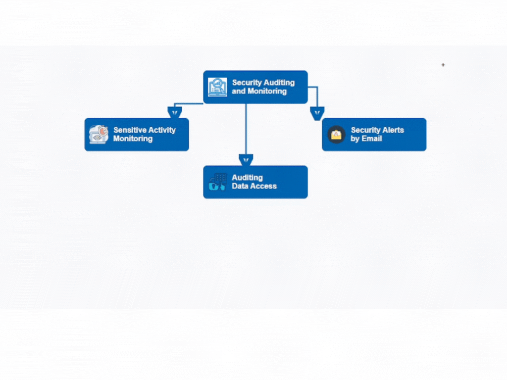

Seguridad Práctica en Bases de Datos
1. Infraestructura Segura
Ubuntu Server / CentOS
Estabilidad y seguridad
UFW, iptables, SELinux
Ej: Infraestructura
Ver diagrama
2. Arquitectura
Estructura general de seguridad
Ej: Arquitectura
Ver diagrama
3. Componentes
Usuarios acceden vía app web
WAF filtra tráfico malicioso
Servidor aloja motor de BD
BD devuelve resultados
Ej: Componentes
Ver diagrama
4. WAF y su Función
Bloquea SQLi, XSS, endpoints
Protección indirecta de BD
Ej: ModSecurity, Cloudflare
Ej: WAF
Ver diagrama
5. Auditoría y Trazabilidad
Registra actividad de usuarios
Errores y cambios sensibles
Usa plugins o logs nativos

Ej: Auditoria
Ver diagrama
6. Trazabilidad con MySQL
Consulta ejemplo:
SELECT * FROM mysql.general_log
WHERE user_host LIKE '%usuario%'
AND argument LIKE '%DELETE%';
Ej: Trazabilidad
Ver diagrama
7. Herramientas y funciones
MySQL Enterprise Audit Plugin (de pago, pero hay alternativas)
Percona Server for MySQL + audit_log plugin (gratuito)
Uso de general_log y slow_query_log para monitoreo básico
Ej: Herramientas
Ver diagrama
8. Percona Toolkit
pt-query-digest (auditoría)
pt-table-checksum (comparación)
Consulta lenta / replicación
Ej: PERCONA Toolkit
Ver diagrama